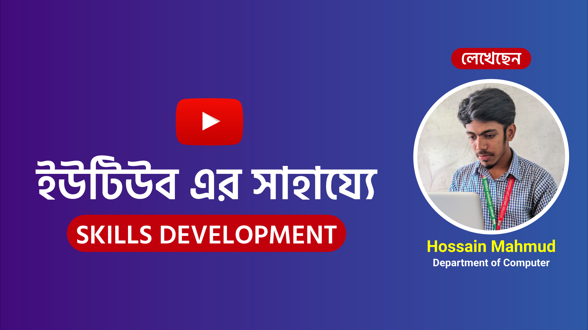
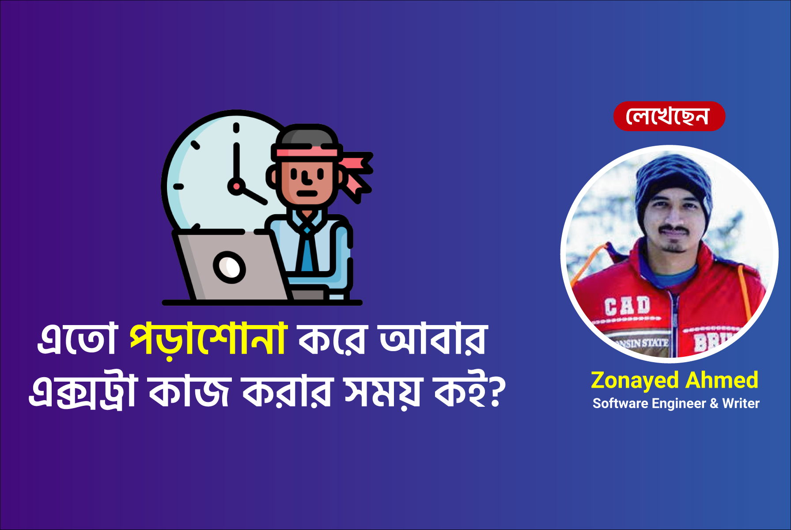

বাংলা ব্লগ
ইউটিউবের সাহায্য নিয়ে কিভাবে স্কিল ডেভেলপমেন্ট করবেন?
Date: 25 July 2022
বর্তমান প্রযুক্তির সঙ্গে তাল মিলিয়ে চলতে হলে আপনার প্রয়োজন নিদিষ্ট কিছু স্কিল। সেগুলো আপনাকে
নিজেই শিখতে হবে।
❝ একটাই লক্ষ্য হতে হবে দক্ষ ❞
আমি প্রথমে আমার কথায় শেয়ার করি আপনাদের মাঝে, ২০১৮ সাল তখন আমি দশম শ্রেণির স্টুডেন্ট। তখন
থেকেই আমার কাছে ছিলো ল্যাপটপ, কোনো স্মাট ফোন ছিলো না। তার আগে বলি আপনার শেখার ইচ্ছে শক্তিটি
সবচেয়ে বড় ভূমিকা রাখবে আপনার স্কিল বৃদ্ধির বিষয়ে। তখন আমি চাইতাম আমি কিছু তৈরি করি কম্পিউটার
দিয়ে তাই আমি MS WORD দিয়ে লেখালেখি করতাম এবং সেগুলো মেমোরিতে লোড দিয়ে বাজারে গিয়ে পিন্ট
করতাম। এইযে আউটপুট টা পেতাম এটাই আমাকে আরো সাহস জুগিয়েছে, ছিলো না Wi-Fi তাই মডেম দিয়ে
ইন্টারনেট ব্যবহার করতাম। আমার একদিন হঠাৎ একটি বিষয়ে ভিডিও সামনে আসে ব্লগার সাইট তৈরি তাই আমি
আর দেরি না করে দ্রুত দেখা শুরু করি ইউটিউবে এবং দেখে দেখে আমিও একসময় তৈরি করে ফেলি ব্লগার
ওয়েবসাইট।
তো আপনারা হয়তো বুঝতে পেরেছেন আমাদের প্রথম যে বিষয়টি লাগবে সেটি হচ্ছে ইচ্ছেশক্তি। বর্তমান
যুগে আপনাকে কেউ হাতে ধরিয়ে শেখাবে না ফ্রি তে, একমাত্র ইউটিউব এ আপনি ফ্রি তে ভিডিও টিউটোরিয়াল
দেখে শিখতে পারবেন।
আপনার পক্ষে হয়তো অনেক টাকার পেইড কোর্স কেনা সম্ভব না তখন আপনি ইউটিউব এর সাহায্য নিতে পারেন।
ইউটিউবে একটি বিষয়ের ওপর হাজার + ভিডিও পেয়ে যাবেন। কি নেই ইউটিউবে সব কিছুই রয়েছে বলা যায়।
ধরুন আপনি MS WORD এ কাজ করছেন কিন্তু আপনি জানেন না কিভাবে পেইজ সাইট ঠিক করতে হয়, পিন্টের পর
যেনো না কেটে যায় লেখার অংশ, আপনার আশেপাশে তেমন কাউকে পাচ্ছেন না সমাধান পাবার মতো মানুষ। তখন
আপনি চলে যাবেন ইউটিউবে আপনার কাঙ্ক্ষিত বিষয়টি সার্চ করলেই অনেক ভিডিও টিউটোরিয়াল পেয়ে
যাবেন।
তাই বলা যায় স্কিল বৃদ্ধি করার জন্য ইউটিউব অনেক ভালো মাধ্যমে। ফ্রিতেই অনেক কিছু পেয়ে
যাচ্ছেন।
হুসাইন মাহমুদ
কম্পিউটার টেকনোলজি
এতো পড়াশোনা করে আবার এক্সট্রা কাজ করার সময় কই?
Date: 23 July 2022
অনেকের মুখে শুনি ভাইয়া সারাদিন ভার্সিটির পড়াশোনা কমপ্লিট করে তো আর এক্সট্রা সময়ই পাই না অন্য
কিছু করার বা অনেকে বলেন ভাই ৮-৯ ঘন্টা চাকরি করার পর আর অন্যকিছু করার মতো সময় কই। কিন্তু
সবারই মনে মনে একটা কিছু করা, একটা কোনো প্রোজেক্ট করা বা নতুন কিছু জিনিস শেখার জন্য অনেক
ইচ্ছা থাকে। কিন্তু অফিস, ভার্সিটি, এই সেই কাজের জন্য আর কোনো কাজ করা হয়ে উঠে না। দিনশেষে সেই
না করা কাজগুলোর জন্য মনে মনে একটু-আকটু আফসোস থেকে যায়। তাদের জন্য আমি আজকে কিভাবে সবকিছু
সামাল দিয়ে নিজের কাজও করতে পারেন সে ব্যাপারে টিপস দিবো।
আমি ইন্ডিয়াতে ইঞ্জিনিয়ারিং কমপ্লিট করেছি, আর আমাদের বেশীরভাগ সময়েই সপ্তাহে ৫ দিন, প্রতিদিন
সকাল ৯ টা থেকে বিকাল ৫ টা পর্যন্ত ভার্সিটিতে সময় কাটাতে হয়েছে। আমি সেই সাথে নিজের
রান্নাবান্না, কাপড়-চোপড় ওয়াশ করা, ভার্সিটির স্টাডি, অ্যসাইনমেন্ট করার পাশাপাশি ওয়েব
ডেভেলপমেন্ট(মার্ন স্ট্যাক), মোবাইল অ্যাপ্লিকেশন ডেভেলপমেন্ট(রিঅ্যাক্ট নেটিভ) শিখেছি এবং
বেশকিছু ব্যাক্তিগত ও ওপেন সোর্স প্রোজেক্ট করেছি। সেই সাথে আরডুইনো নিয়ে কাজ করা, ব্লগ লেখা
এবং অসংখ্য দেশী-বিদেশী বই পড়েছি। আর হ্যা ভুলেই যাই বারবার, সেই সাথে একটা বইও লিখেছি। আমি
কিভাবে এগুলো সব ভার্সিটি লাইফে করেছি সেটারই টিপস আপনাদেরকে জানাবোঃ
👉 সকাল সকাল ঘুম থেকে উঠে যেতে হবে। আপনারা যারা মুসলিম আছেন তারা চাইলে নিজেদেত রুটিনটাকে
নামাজের ওয়াক্তের উপর বেইস করে তৈরী করতে পারেন। সকালে এমন সময় উঠবেন যাতে সেটা ৬ টার মধ্যে হয়
এবং উঠে ফজরের নামাজ পড়তে পারেন। অন্যরা কোনো ধরনের প্রার্থনা বা মেডিটেশন যেটা আপনার ভালো লাগে
সেটা দিয়ে শুরু করতে পারেন। এতে আপনার মাইন্ডও ফ্রেশ হবে, এবং খুব সুন্দর একটা সকাল উপভোগ করতে
পারবেন। আর সেইসাথে ৬-৯/১০টা পর্যন্ত অলমোস্ট ৩-৪ ঘন্টার একটা অতিরিক্ত সময় পাবেন আপনার নিজের
পিছনে ব্যয় করার জন্য।
👉 সকালে কফি খেলে অনেকেই একটু সতেজ ফীল করে, ঘুমটাও কাটানো যায়। তাছাড়া সকাল সকাল একটু গরম
কিছু সবসময়েই বেটার। বাট আপনি যদি কফি না খেয়েও সতেজ থাকতে পারেন, তাহলে আরো বেটার... এটা
অপশনাল...
👉 সারাদিন কি কি করবেন সেটার একটা রুটিন করে ফেলতে পারেন। রুটিন করার উদ্দেশ্য হচ্ছে
ট্র্যাকে থাকা। তাছাড়া সকালে কি কি কাজ করবেন এগুলো ভেবে রুটিন সাজিয়ে ফেললে সারাদিন অনেক
গোছানো থাকা যায়। দিনের একটা সময় অবসাদ বা বিভিন্ন কারনে কি করা উচিত বা কি করবো বা থাক আজকে না
কালকে করবো বলে অনেক কাজ এড়িয়ে যাবেন যেটা রুটিন করলে অনেকটাই এড়ানো যায়। রুটিন ইজ
ইম্পর্ট্যান্ট!
👉 সকালবেলায় চেষ্টা করবেন নতুন কিছু শেখার জন্য কিছু সময় বরাদ্দ রাখার। নতুন কোনো
স্কিল শেখা, ভিডিও টিউটোরিয়াল দেখা, বা টেকনিক্যাল বই/ব্লগ পড়ার জন্য সময় রাখতে পারেন। এই
সময়টাতে আপনি খুব সহজেই নতুন জ্ঞান আয়ত্বে আনতে পারবেন।
👉 যাদের ফিজিক্যাল পরীশ্রম করতে হয় না খুব বেশী একটা তারা চাইলে এই সময়টাতে ফিজিক্যাল
এক্সারসাইজ করতে পারেন। এটাও শরীরের জন্য খুব প্রয়োজনীয়। আপনি সুস্থ থাকলে, শরীর ফিট থাকলে
তাহলে আপনি আপনার কাছ থেকে ভালো ফিডব্যাক পাবেন। সেইসাথে সকালের খাবারটাও গুরুত্বপূর্ণ, তাই
চাইবেন সকালে যাতে ব্রেকফাস্টটা ভালোভাবে করা হয়।
👉 এবার আপনার ভার্সিটি/কাজে যাওয়ার সময়। কাজে যাওয়ার আগে গোসল করে ফ্রেশ হয়ে নিতে
পারেন। তাহলে সারাদিন আরো ভালো অ্যাক্টিভ থাকতে পারবেন।
👉 অফিসে বা ক্লাসরুমেও চাইলে আপনি কোনো বই বা আপনার কাজের সাথে সম্পর্কযুক্ত এমন কোনো
বিষয় শিখতে পারেন। মাঝেমধ্যে ক্লাসে টিচার আসতে লেইট করলে সেসময় টুকটাক নিজের কাজ সেরে নিতে
পারেন, অ্যাসাইনমেন্ট থাকলে সেটাও করে নিতে পারেন। ক্লাসের স্টাডি ক্লাসেই শেষ করে ফেলতে পারবেন
অনেকটা... মানে আপনি ফ্রী টাইম পাওয়া মানে এটা আপনার জন্য ফ্রী হিট। এখন এটাকে আপনি যতোটা
ইফেক্টিভ ওয়েতে ইউটেলাইজ করতে পারেন, আপনার জন্য ঠিক ততোই ভালো। আমি ব্যাক্তিগতভাবে এমন
আনএক্সপেক্টেড ফ্রী টাইম চলে আসলে কি কি করবো সেটারও একটা লিস্ট মেইন্টেইন করতাম, এবং সময়ে সময়ে
কাজগুলো ডানও হয়ে যেতো!
👉 লাঞ্চ টাইমে লাঞ্চ করবেন, বন্ধু/কলিগদের সাথেও একটু আকটু ইন্ট্যারেক্ট করবেন। তবে
ম্যাক্সিমাম ক্ষেত্রেই লাঞ্চের জন্য যে সময় পাওয়া যায় সেটা পুরোটা লাঞ্চ করতে লাগে না।
সেক্ষেত্রে আপনি ঐসময়টাও ফ্রী হিট হিসেবে কাজে লাগাতে পারেন!
👉 অফিস বা ক্লাস থেকে এসে প্রতিদিন আপনি ঘুমানোর আগ-পর্যন্ত অলমোস্ট ৪-৬ ঘন্টার মতো
সময় পাবেন। এই সময়টা ইউটেলাইজ করতে পারলে আপনাকে কেউ আর থামাতে পারবে না। অফিস থেকে বা ক্লাস
শেষে বাসায় এসে ফ্রেশ হয়ে এবার বসতে পারেন কিছু একটা ইমপ্লিমেন্ট করা নিয়ে। এই সময়টা নিজের কোনো
প্রোজেক্ট ইমপ্লিমেন্ট করা, অ্যাকচুয়ালি কোনো কাজে হাত দেওয়া বা ব্লগিং করার জন্য বেশ ভালো একটা
সময়। এগুলোর পাশাপাশি আপনি আপনার ক্লাসের জন্য কোনো কিছু করণীয় থাকলে বা অ্যাকাডেমিক স্টাডিও
সেরে ফেলতে পারবেন। ৪-৬ ঘন্টা এগুলো সব করে ফেলার জন্য হিউজ টাইম!
👉 এবার আপনার ঘুমাতে যাবার পালা, তবে ঘুমানোর আগে সকালে তৈরি করা রুটিনটা ঠিক কতটুকু
কম্পলিট করতে পেরেছেন, করতে না পারলে কেনো সম্ভব হয়নি, বা কিভাবে আরো ইম্প্রুভ করা যায় সেটা
ভেবে রাখতে পারেন... ঘুমানোর রুটিনটা অবশ্যই সকালে কখন উঠবেন সেটার উপর ডিপেন্ড করে। তবে রাত ১১
টার পর সবকিছু থেকে বিচ্ছিন্ন হয়ে যাওয়া বেটার আর এমনভাবে ঘুমের টাইমটা সেট করবেন যাতে মিনিমাম
৬-৭ ঘন্টা ঘুমাতে পারেন। তবে যতোই ঘুমান সেটা যেনো ৬ ঘন্টার এর নিচে এবং ৭ ঘন্টার উপরে না যায়!
ব্যাস এবার আপনি পরেরদিনের জন্য তৈরি! রিপিট করতে থাকুন এভাবে... কনসিস্টেন্টলি এভাবে কাজ করে
যেতে থাকলে আপনার আর কোনো স্বপ্ন ফেলনা যাবে না।
⛔ আচ্ছা ভাই আমি কি মানুষ না রোবট যে এভাবে করতে হবে। আমি কি ঘুরতে যাবো না, বাইরে খেতে
যাবো না, বন্ধু-বান্ধবদের সাথে আড্ডা দিবো না, ছবি দেখতে যাবো না?
👉 ইয়েস অবশ্যই যাবেন, অবশ্যই এগুলো সব করবেন। মাঝেমধ্যে মন ফ্রেশ করার জন্য এগুলো
অবশ্যই প্রয়োজন। তবে এগুলো একটাও আপনার প্রয়োরিটি লিস্টে থাকার প্রয়োজন নেই। মাসে ২-৩ বার বা
দুই সপ্তাহে একবার বা সপ্তাহে একবার এগুলোর পিছনে সময় দিবেন। বাট আপনার মেইন প্রায়োরিটি আপনার
কাজ।
⚠️ আরো এক্সট্রিম হতে চান? অন্যদের থেকে ডিফারেন্ট হয়ে চান?
👉 আপনি যদি চান এরপরেও আরো কিছু করতে তাহলে আপনাকে আনএক্সপেক্টেডলি চলে আসা ফ্রী টাইমগুলো
ইউটেলাইজ করতে হবে। এই ধরেন কোনো কারণে অফিসে কাজ নেই, বসদের থেকে অনুমতি নিয়ে নিজের কোনো কাজ
করতে পারেন। অথবা আজকে টিচার আসবে না বা আসতে লেইট হচ্ছে বা ক্লাস নেই, তখন নিজের আরো কিছু কাজ
করে নিতে পারেন। আপনারা যারা আমার হাতেকলমে জাভাস্ক্রিপ্ট বইটা দেখেছেন এটার প্রথম ড্রাফট কপিটা
আমি আমার লাঞ্চ টাইমে লিখেছি। বললাম না লাঞ্চ টাইমের এক ঘন্টাও অনেক বেশী সময়। আমি লাঞ্চ
কমপ্লিট করতে ২০-২৫ মিনিট নিতাম, বাকী সময় লাইব্রেরিতে বসে বইয়ের কাজ করেছি রেগুলারলি। ফলাফল
আজকে আপনাদের সামনে। তো এই সময়গুলোকেও চাইলে ইউটেলাইজ করতে পারেন।
👉 কর্মস্থল বা ক্যাম্পাসের আশেপাশে বাসা নেওয়ার চেষ্টা করবেন। তাহলে আপনি সেখান থেকেও
অনেক বড় একটা সময় যেটা যাতায়াতে নষ্ট হতো সেটা বাচাতে পারবেন। আপনার যদি প্রতিদিন যেতে আধা
ঘন্টা আর আসতে আধা ঘন্টা বেচে যায়, তাহলে সেটা টোটালি এক ঘন্টা সেইভ করে। মানে প্রতিদিন আপনি
অতিরিক্ত এক ঘন্টা সময় পাবেন আপনার কাজ করার জন্য।
আশা করি আমার এই টিপসগুলো আপনাদের কাজে আসবে। যদি কাজে আসে, প্রয়োজনীয় মনে হয় তাহলে আপনি আমার
লেখাটা শেয়ার করতে পারেন সবার সাথে। আজকে এই পর্যন্তই, অন্যদিন অন্য আরেকটা টপিক নিয়ে আসবো...
ধন্যবাদ,
জুনায়েদ আহমেদ,
সফটওয়্যার ইঞ্জিনিয়ার এবং লেখক